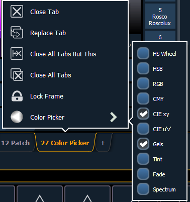

The color picker can be opened from the Home Screen or by using [Tab] [2][7].
With the color picker open, you have the choice between six different Color Spaces, a Gel Picker,Color Path, Tinting Tools, and Spectrum Tools.
These options are found by right clicking on Color Picker Tab.
